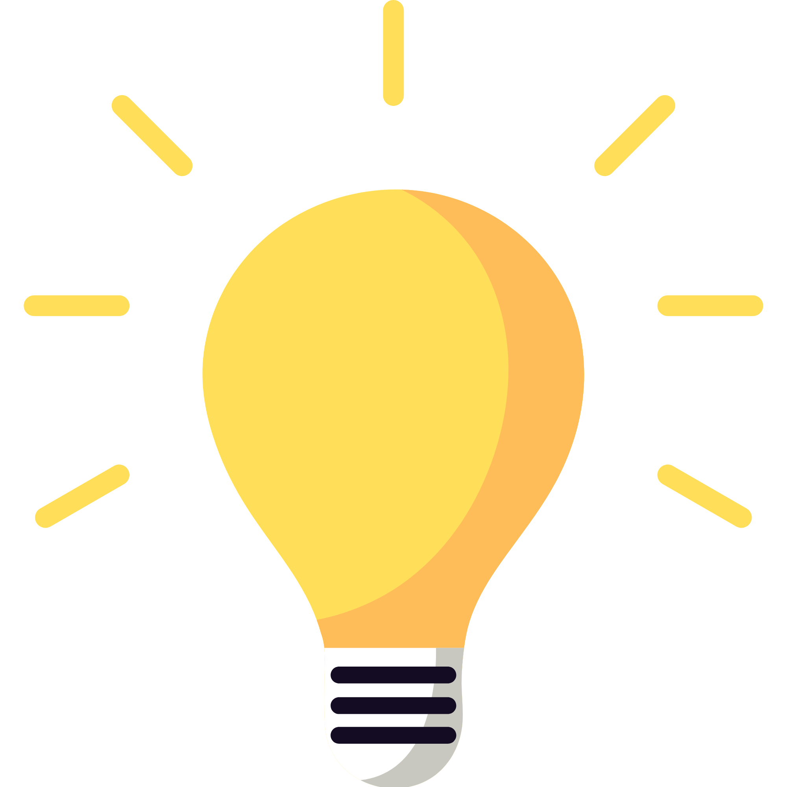

STACJA: 4 KLASA
LINIA UŁAMKÓW
PODPOWIEDŹ
Na tej stacji znajdziesz wszystkie tematy realizowane w 4 klasie w dzielnicy UŁAMKÓW.

Brawo!
Dotarłeś na stację 4 KLASA.
Wybierz temat, który chcesz odkryć.
Jesteś we właściwym miejscu!
Następny krok: 6. Ułamki dziesiętne